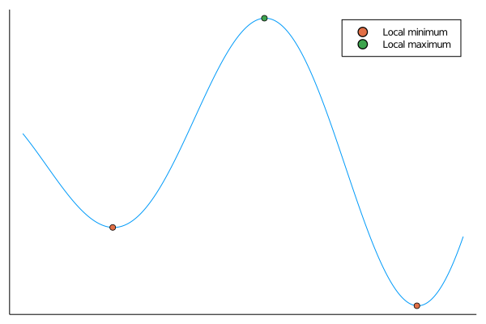

Theory of optimization
The goal of an optimization problem is to minimize of maximize a function $f$ over a set $X$. Namely
\[ \begin{aligned} \text{minimize}\qquad &f(x) \\ \text{subject to}\qquad &x\in X. \end{aligned}\]
Should we consider both minimization and maximization problems? No. Because
\[ \text{maximize}\qquad f(x)\]
is equivalent to
\[ -\text{minimize}\qquad -f(x).\]
Therefore, it suffices to consider minimization problems.
Gradients
As we will see later, gradients are crucial to optimization. For a function $f:\mathbb{R}\to \mathbb{R}$ it is defined by
\[f'(x) = \lim_{h\to 0}\frac{f(x+h)-f(x)}{h}.\]
For a mapping $f:\mathbb{R}^n\to \mathbb{R}^m$, the Jacobian is a matrix $\nabla f(x)$ of size $m\times n$ which satisfies
\[ \lim_{h\to 0}\frac{\|f(x+h)-f(x) - \nabla f(x)h \|}{\|h\|} = 0.\]
If a function $f=(f_1,\dots,f_m)$ is differentiable, then
\[(\nabla f(x))_{i,j} = \frac{\partial f_i}{\partial x_j}(x) = \lim_{h\to 0}\frac{f_i(x_1,\dots,x_{j-1},x_j+h,x_{j+1},\dots,x_n)-f(x_1,\dots,x_n)}{h}\]
Gradient $\nabla f(x)$ of a function $f:\mathbb{R}^n\to\mathbb{R}$ should be of size $1\times n$ but it is commonly considered as $n\times 1$.
To compute the gradient, the chain rule is crucial.
Consider two differentiable functions $f:\mathbb{R}^m\to\mathbb{R}^s$ and $g:\mathbb{R}^n\to\mathbb{R}^m$. Then its composition $h(x) := f(g(x))$ is differentiable with Jacobian
\[\nabla h(x) = \nabla f(g(x))\nabla g(x).\]
Unconstrained optimization
What do we look for when we minimize a function $f$ over some $X$? The optimal point would be a global minimum, which is a point $x\in X$ which satisfies
\[f(x) \le f(y) \text{ for all }y\in X.\]
This point is often very difficult to find. Sometimes we are able to find a local minimum, which is a global minimum on some small neighborhood of $x$.
Consider a differentiable function $f$ over $X=\mathbb{R}^n$. If $x$ is its local minimum, then $\nabla f(x)=0$. Conversely, if $f$ is convex, then every point $x$ with $\nabla f(x)=0$ is a global minimum of $f$.
Points with $\nabla f(x)=0$ are known as stationary points. Optimization algorithms often try to find them with the hope that they minimize the function $f$.

This theorem does not hold if $X$ is not the whole space.
Constrained optimization
The usual formulation of constrained optimization is in the form
\[\tag{P} \begin{aligned} \text{minimize}\qquad &f(x) \\ \text{subject to}\qquad &g_i(x) \le 0,\ i=1,\dots,I, \\ &h_j(x) = 0,\ j=1,\dots,J. \end{aligned}\]
This optimization problem is also called the primal formulation. It is closely connected with the Lagrangian
\[L(x;\lambda,\mu) = f(x) + \sum_{i=1}^I \lambda_i g_i(x) + \sum_{j=1}^J \mu_j h_j(x).\]
Namely, it is simple to show that the primal formulation (P) is equivalent to
\[\operatorname*{minimize}_x\quad \operatorname*{maximize}_{\lambda\ge 0,\mu}\quad L(x;\lambda,\mu).\]
The dual problem then switches the minimize and maximize operators to arrive at
\[\tag{D} \operatorname*{maximize}_{\lambda\ge 0,\mu} \quad\operatorname*{minimize}_x\quad L(x;\lambda,\mu).\]
The linear program
\[\begin{aligned} \text{minimize}\qquad &c^\top x \\ \text{subject to}\qquad &Ax=b, \\ &x\ge 0 \end{aligned}\]
is equivalent to
\[\begin{aligned} \text{maximize}\qquad &b^\top \mu \\ \text{subject to}\qquad &A^\top \mu\le c. \end{aligned}\]
We can observe several things:
- Primal and dual problems switch minimization and maximization.
- Primal and dual problems switch variables and constraints.
The optimality conditions for constrained optimization take a more complex form.
Let $f$, $g_i$ and $h_j$ be differentiable function and let a constraint qualification hold. If $x$ is a local minimum of the primal problem (P), then there are $\lambda\ge 0$ and $\mu$ such that
\[ \begin{aligned} &\text{Optimality:} && \nabla_x L(x;\lambda,\mu) = 0, \\ &\text{Feasibility:} && \nabla_\lambda L(x;\lambda,\mu)\le 0,\ \nabla_\mu L(x;\lambda,\mu) = 0, \\ &\text{Complementarity:} && \lambda^\top g(x) = 0. \end{aligned}\]
If $f$ and $g$ are convex and $h$ is linear, then every stationary point is a global minimum of (P).